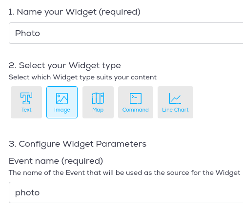

-
Use Wia.io to collect and display data from the RPi
Set up
Create an account on Wia.io
SSH into your RPi and install Wia
pip install wia- Make a directory for the python scripts:
mkdir iot-week9 cd iot*Create Weather Device
Go to the Wia Dashboard and select
Create a New Spacethen selectDevices. Add a device and give it the nameSensePi. Now, in theConfigurationtab for your device, you will finddevice_secret_keywhich should begin withd_sk. This will be important later on.Python Code
Create a file called
sensehat_wia.pycontaining following code:from wia import Wia wia = Wia() wia.access_token = "Your access token" wia.Event.publish(name="temperature", data=21.5)- Run the program. In weather space on the Wia Dashboard, select
Devicesand check thetemperatureevent has appeared in theEventstab for your device.

- Select the
Overviewtab and click theAdd a Widgetbutton. Add a widget calledTemperature. For the event field, make sure you type the event name exactly as it appears in the code (mind your case!). Your overview tab should be similar to the following:
All going well, you now have code that interacts and creates events in Wia
Integrate SenseHat
Now lets update the code to use the SenseHat sensor values to create events:
- Import the
sense-hatlibrary and create a Sensehat object:
from sense_hat import SenseHat sense = SenseHat()- Update the sensor publishing event to use the temperature sensor value
temp=round(sense.get_temperature(),2)Now run the script again and check your Wia space responds to the event.
Exercise: Now update
data_wia.pyto do the following:- to create
pressureandhumidityevents in your Wia space every 15 seconds. - Add text widgets for pressure and humidity.
- Change the
Temperaturewidget type to a graph(leave default vlues forTime periodandAggregate function) All going well, youroverviewtab should now look like this and update every 15 seconds.
- to create
Web API and Web Page
You can access your app data on Wia via a Restful API. This would be useful if you have other programs that require and analyse the data in question.
Web Site
Create a Web Page
- In the same directory as your python script, create a new directory called
html. - Create a file called
index.htmland add the following content:
<!DOCTYPE html> <html> <head> <meta charset="UTF-8"> </head> <body> <h1>SenseHat Weather Station</h1> </body> </html>- Navigate back to your Wia Dashboard. In the overview for your device, you can see your widgets. In the upper right hand corner of the widget, there should be a box with an arrow. Click the box. A screen like this should pop up.
- Select
Anyone can view this widget and embed it in any website.You should also see Embed code, which will start with<iframe>and end with</iframe>. Copy the entire code and paste it below the<h1>SenseHat Weather Station</h1>line and above the</body>line. - View your
index.htmlpage in a browser. It should look similar to the following:

Put it on the web
You can use GitHub to host your webpage so that anybody on the web can view it.
If you don't have a github account already, you can make one here.
Once you are set up with github, create a new repository and name it
your-github-username.github.io. Check the box to initialize with a README.Now, navigate to your new repository and create a new file. It must be named index.html. Copy and paste the code from
index.html. Click commit changes. Now, visit your site at https://username.github.io. You're on the Web! -
Smile, you're on camera.
In this section you will use Wia commands and flows to control the SenseHat using facial expressions. Wia uses MQTT and the publish-subscribe pattern we talked about in class in their commands functionality.
- Inside your Device Dashboard click on the
Commandsand then clickAdd Command - Add a
happy-faceandsad-facecommands. You will use these commands to control the Raspberry Pi with just a smile!

- When finished, the commands tab should look like this:
Create Photo Events
The following section should be done on your laptop or workstation
You will need a webcam to complete the following section. The alternative is to post photos to the Wia service. Complete the following on your laptop or workstation.
Complete one of the following to create a photo event in Wia.
Post photo from webcam
Install OpenCV
sudo pip install opencv-python- If not already installed, install Wia
sudo pip install wia- On your laptop workstation, create a directory called
python-photo. - Create a file called
snap.pyand enter the following code:
import cv2 from wia import Wia import os import time input('Hit any key to take a pic...') vc = cv2.VideoCapture(0) wia = Wia() wia.access_token = 'YOUR_DEVICE_SECRET_KEY' file_name='wia-pic.jpg' if vc.isOpened(): # try to get the first frame rval, frame = vc.read() cv2.imwrite(file_name,frame) # writes image test.bmp to disk dir_path = os.path.dirname(os.path.realpath(__file__)) result = wia.Event.publish(name='photo', file=open(dir_path + '/' + file_name, 'rb')) else: rval = False- Change the
wia.access_tokento your key and run the program. - Look into the camera and press andy key. Your photo will be published as an event on Wia. Log into Wia and you should see the event recorded, similar to the following.
Create a Flow in Wia
- In the Wia dashboard, create a new Flow as follows:
- The trigger is when a
photoevent is created by thesensepidevice. - This then goes through a
Detect Facesservice node, the output of which branches off into twoRun Functionlogic nodes - one to output a string "Yes" if the subject is smiling, and one to output a string "No" if the subject isn't smiling. Here's the code for the 'smiling' logic node:
if (input.body.faceDetails && input.body.faceDetails.length > 0) { output.body.isSmiling = input.body.faceDetails[0].smile.value; if (output.body.isSmiling){ output.process = true; output.body.data = "Yes"; }else{ output.process = false; } } else { output.process = false; output.body.data = false; }- The Javascript code for the
not smilingnode is as follows:
if (input.body.faceDetails && input.body.faceDetails.length > 0) { output.body.isSmiling = input.body.faceDetails[0].smile.value; if (!output.body.isSmiling){ output.process = true; output.body.data = "No"; }else{ output.process = false; } } else { output.process = false; output.body.data = false; }If the subject is smiling, the 'happy-face' Command is run, triggering the RPi to display a happy emoticon on the SenseHat. If the subject isn't smiling, the 'sad-face' Command is run, displaying a sad emoticon on the SenseHat.
- Now add a photo widget on the
SensePidevices overview page and link it to thephotoevent as follows:

- As an exercise, add a
Textwidget and link it to thehappyevent.
On RPi
- Run the following command in the same directory as
sensehay-wia.py
wget http://rpf.io/shfaces -O faces.pyUpdate
sensehat_wia.pyto use MQTT to subscribe to the commands:- Import
happyandsadfrom the faces library
from faces import happy, sad- Add two callback functions for each command.
def on_happy_face(event): print(":)") sense.set_pixels(happy) def on_sad_face(event): print(":(") sense.set_pixels(sad)- Finally, add the following lines of code to subscribe to the
happy-faceandsad-facecommands.
wia.Stream.connect() wia.Command.subscribe(**{"device": deviceId, "slug": 'happy-face', "func": on_happy_face}) wia.Command.subscribe(**{"device": deviceId, "slug": 'sad-face', "func": on_sad_face})- Run the program on the RPi and take another photo. It should now inicate if you're smiling or not. Smile!
- Inside your Device Dashboard click on the